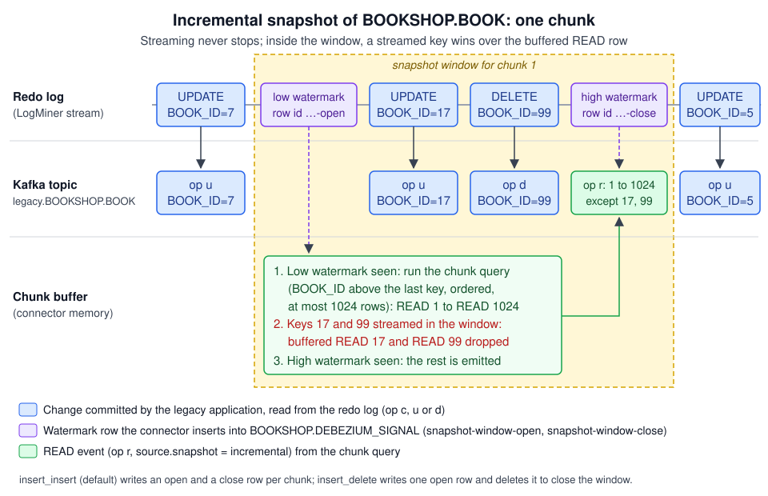

Incremental, Read-only and Blocking Snapshots
|
This content was generated with the assistance of AI and should be verified against the official documentation before being relied on in production. |
The initial snapshot copies the legacy tables once, when a connector
starts for the first time. A migration that runs for months needs more than that. A new table joins the migration scope
(the legacy team adds BOOKSHOP.PROMOTION, or the next strangler slice needs SUPPLIER_CATALOGUE). A bug in the
anti-corruption layer corrupted the book table in PostgreSQL and it must be rebuilt from the source. A Kafka topic was
deleted by mistake. A table is too large for a single initial snapshot to finish within Oracle’s undo retention. In all
these cases the connector must read the current content of some tables again, while it keeps streaming every other
change.
Debezium offers two kinds of ad hoc snapshot for this, both triggered by a signal:
-
An incremental snapshot reads the table in chunks interleaved with streaming, using watermarks to merge the snapshot rows with concurrent changes. It can be stopped, paused, resumed, and it survives connector restarts.
-
A blocking snapshot pauses streaming, takes a snapshot of the requested tables the same way the initial snapshot does, and then resumes streaming. It is faster for one large table but holds back every other change while it runs.
This page explains both, with the watermark algorithm behind incremental snapshots, how to backfill only part of a table, how to run incremental snapshots without write access to the source, and how to add a table to the scope of a running migration. The signal channels and the notification messages are described on Signaling & Notifications.
Checked on 2026-11-09 against Debezium 3.7.1.Final (Oracle AI Database 26ai Free, image gvenzl/oracle-free:23.26.3, PostgreSQL 18, Kafka 4.x in KRaft mode).
The signals and configuration on this page are derived from the official Debezium 3.7 documentation and the
incremental snapshots blog post; they were not run as part of writing the page.
Choosing the kind of snapshot
| Incremental snapshot | Blocking snapshot | |
|---|---|---|
Signal |
|
|
Streaming during the snapshot |
Continues. Changes to other tables, and to the snapshotted table, keep flowing. |
Stops until the snapshot finishes, then resumes. |
How rows are read |
In chunks of |
Like the initial snapshot: a full scan per table, with the connector’s isolation and locking settings. |
Interruption |
Resumable: after a restart the snapshot continues from the last chunk. Can be paused and resumed. |
Not resumable. Can be stopped. |
Source requirements |
A primary key (or |
None beyond those of the initial snapshot. |
Filter in |
A |
A full |
Duplicates |
De-duplicated within each chunk window; consumers still see a |
Events received between the signal and the moment streaming stops can be emitted again after the snapshot. |
Typical migration use |
Backfilling a table that joins the scope; rebuilding a target table; loading a very large table without a long-running read; partial backfills by date range. |
Loading a new large table quickly during a quiet period, when a short pause in streaming is acceptable. |
Incremental snapshots are the default choice during a migration because the legacy system and the new one keep converging while the backfill runs. Blocking snapshots are a tool for maintenance windows.
How an incremental snapshot works
Incremental snapshots implement the watermark-based algorithm described in the Debezium design document DDD-3 and in
the incremental snapshots blog post, an approach that Netflix’s DBLog paper introduced. The problem it solves is this:
if the connector simply ran SELECT * FROM BOOKSHOP.BOOK while streaming, a READ event for book 17 read from the
table could reach Kafka after the UPDATE for book 17 read from the redo log, and a consumer would overwrite the new
price with the old one. The algorithm guarantees that, for each key, the snapshot row never overtakes a newer change.
Chunks
When the snapshot of a table starts, the connector reads the table’s maximum primary key value and then works through
the table in key order, one chunk at a time. Each chunk query returns at most incremental.snapshot.chunk.size rows
whose key is greater than the last key of the previous chunk and not greater than the maximum key recorded at the start.
Rows inserted later with a higher key are not part of the snapshot; they arrive through streaming anyway.
The snapshot window
For each chunk, the connector:
-
Opens the window: it inserts a low watermark row into the signal table. The row has the id
<chunk-id>-openand the typesnapshot-window-open. -
Runs the chunk query and puts the rows into an in-memory buffer as
READevents. -
Closes the window: with the default
insert_insertstrategy it inserts a high watermark row, id<chunk-id>-close, typesnapshot-window-close. Withinsert_deleteit deletes the open row instead.
The watermark rows are ordinary inserts into an ordinary captured table, so they appear in the transaction log, in order with every other change. When the streaming side reads the low watermark from the log, it knows that every log event that follows was committed after the chunk query could have started; when it reads the high watermark, it knows that the chunk query has finished. While the window is open:
-
A streamed event for a key that is not in the buffer is sent to Kafka immediately.
-
A streamed event for a key that is in the buffer is sent to Kafka, and the buffered
READfor that key is discarded, because the streamed event is newer.
When the high watermark arrives, the READ events that are still in the buffer have no newer change and are emitted.
The connector then moves on to the next chunk.

The chunk id is a UUID (36 characters), so the watermark ids <uuid>-open and <uuid>-close are 41 and 42
characters long. That is why the official signal table DDL uses VARCHAR(42) for the id column, and why the Bookshop
signal table uses ID VARCHAR2(42). A narrower column makes the watermark insert fail.
What consumers see
Snapshot rows are emitted as READ events ("op": "r") on the normal table topic, with source.snapshot set to
incremental:
{
"before": null,
"after": {
"BOOK_ID": "17",
"ISBN": "9780131103627",
"TITLE": "The C Programming Language",
"AUTHOR_ID": "3",
"PRICE": "10.24",
"CURRENCY": "EUR",
"PUBLISHED": 576460800000,
"ACTIVE_FLG": "Y",
"SUPPLIER_ID": "12",
"LAST_UPD": 1762604800000
},
"source": {
"connector": "oracle",
"name": "legacy",
"snapshot": "incremental",
"db": "FREEPDB1",
"schema": "BOOKSHOP",
"table": "BOOK"
},
"op": "r",
"ts_ms": 1762680046353
}(Every NUMBER value, keys included, is a string because the Bookshop source uses decimal.handling.mode=string.
With the default precise mode, PRICE would be base64-encoded bytes and the keys numbers; see
Data Types & Precision.)
What this means for the Bookshop consumers:
-
READevents must be applied as upserts, exactly like the initial snapshot. The JDBC sink withinsert.mode=upsertdoes this. -
The snapshot rows interleave with streamed events for other keys. A consumer that keeps "last applied position" per table (for example in the
processed_changetable) must not assume that positions only grow; snapshot events carry the current streaming position, not a position of their own. -
A row deleted after it was emitted in an earlier chunk arrives as a normal
DELETE. A row deleted before its chunk is read is never emitted as aREAD. Either way the target ends up without it. -
Re-running an incremental snapshot over a table that the target already has is safe for upserting consumers. It re-emits every row, which costs time and topic space but does not change the data.
Prerequisites
For the Oracle source bookshop-oracle-source:
-
The signal table
BOOKSHOP.DEBEZIUM_SIGNALexists, has supplemental logging for all columns, and the connector userC##DBZUSERhasINSERT, DELETEon it. That grant is not in the official grant list; without it the snapshot fails withORA-41900: missing INSERT privilege on "BOOKSHOP"."DEBEZIUM_SIGNAL", as the worked-example run on 2026-11-09 showed. The DDL and grants are on Signaling & Notifications. -
signal.data.collectionnames it, and thesourcechannel is insignal.enabled.channels. The source channel is required for incremental snapshots even when the request itself is sent through the Kafka channel, because the watermarks are written to the signal table. Only read-only incremental snapshots (see below) do not need it. -
Each table to snapshot has a primary key, or the signal names a
surrogate-key. -
No schema change runs on the table while its incremental snapshot is in progress. The Oracle connector documentation states that it does not support schema changes during an incremental snapshot.
{
"signal.enabled.channels": "source,kafka",
"signal.data.collection": "FREEPDB1.BOOKSHOP.DEBEZIUM_SIGNAL",
"signal.kafka.topic": "legacy.signals",
"signal.kafka.bootstrap.servers": "kafka:9092",
"incremental.snapshot.chunk.size": "4096",
"incremental.snapshot.watermarking.strategy": "insert_delete",
"notification.enabled.channels": "sink,log",
"notification.sink.topic.name": "legacy.notifications"
}The signal and notification settings in this fragment are the canonical ones. The two incremental.snapshot.* values
are a tuning option: the canonical connector leaves both at their defaults (1024 rows per chunk and insert_insert).
About the two incremental snapshot properties:
-
incremental.snapshot.chunk.size(default1024) is the maximum number of rows per chunk. Larger chunks mean fewer queries and fewer watermark rows, but more memory in the connector (the buffer holds a whole chunk) and a longer window per chunk. For narrow tables such asBOOK, 4096 to 16384 rows is a reasonable starting point; for tables with LOB columns stay at the default. Measure with the chunk metrics below. -
incremental.snapshot.watermarking.strategyisinsert_insert(default: an open and a close row per chunk) orinsert_delete(one open row per chunk, deleted to close the window). A 50-million-rowORDER_LINEtable at 4096 rows per chunk is about 12,200 chunks, that is about 24,400 rows left in the signal table withinsert_insert.insert_deletekeeps the table small; withinsert_insert, delete old watermark rows after the snapshot finishes (rows whoseTYPEissnapshot-window-openorsnapshot-window-close).
MySQL and SQL Server also have incremental.snapshot.allow.schema.changes (default false), which lets the connector
detect a schema change during an incremental snapshot and re-read the current chunk; changes to the primary key are
still not supported. SQL Server has incremental.snapshot.option.recompile to add OPTION(RECOMPILE) to the chunk
queries.
Triggering an incremental snapshot
Through the signal table
The signal is a row in BOOKSHOP.DEBEZIUM_SIGNAL with the type execute-snapshot and a JSON DATA value. Table names
in data-collections are regular expressions matched against the fully-qualified name. For an Oracle CDB the
fully-qualified name starts with the PDB name: FREEPDB1.BOOKSHOP.BOOK, the same value that appears in
source.db of the change events. Names are case-sensitive, and Oracle stores unquoted names in upper case.
The official property description of signal.data.collection mentions the root (CDB) database name for a PDB, but
with FREE.BOOKSHOP.DEBEZIUM_SIGNAL the worked-example run on 2026-11-09 silently ignored every signal, and with
FREEPDB1.BOOKSHOP.DEBEZIUM_SIGNAL the signals worked. The details are on
Signaling & Notifications.
INSERT INTO BOOKSHOP.DEBEZIUM_SIGNAL (ID, TYPE, DATA)
VALUES ('backfill-book-author-2026-11-09',
'execute-snapshot',
'{"data-collections": ["FREEPDB1.BOOKSHOP.BOOK", "FREEPDB1.BOOKSHOP.AUTHOR"], "type": "incremental"}');
COMMIT;The COMMIT matters: the connector reads the signal from the redo log, so an uncommitted insert is invisible to it.
The ID is free text (up to the column width); use something that tells the operations team what the signal was for.
The id of the signal is reused as the id of the incremental snapshot notifications, which lets a runbook match
notifications to its request.
Through the Kafka signal topic
With the kafka channel enabled, the same request can be sent to legacy.signals without database access. The
message key must equal the connector’s topic.prefix (legacy), and the value carries type and data. The
topic must have a single partition.
docker compose exec -T kafka /kafka/bin/kafka-console-producer.sh \
--bootstrap-server kafka:9092 \
--topic legacy.signals \
--reader-property parse.key=true \
--reader-property key.separator='|' <<'EOF'
legacy|{"type":"execute-snapshot","data":{"data-collections":["FREEPDB1.BOOKSHOP.BOOK","FREEPDB1.BOOKSHOP.AUTHOR"],"type":"INCREMENTAL"}}
EOFReference: Debezium — Oracle connector: using the Kafka signaling channel to trigger an incremental snapshot
The command runs inside the kafka container (-T passes the here-document to it), where /kafka/bin is the location
of the tools in the quay.io/debezium/kafka:3.7.1.Final image and the broker listens on kafka:9092; adjust both for
other Kafka distributions. The official examples spell the snapshot type both as incremental and as INCREMENTAL.
Kafka signals have no id field in the message. The connector generates one, so match notifications by
data_collections instead of by id when you use this channel.
Partial backfills with additional-conditions
additional-conditions restricts the snapshot of a table to the rows that match a filter. For an incremental
snapshot, the filter is a search condition that the connector appends to the chunk query’s WHERE clause. Uses in a
migration:
-
Backfill one year of orders at a time, so that each run is short and can be verified before the next.
-
Re-send only the rows that a consumer bug affected, for example the books of one supplier.
-
Load the "active" part of a table first (
ACTIVE_FLG = 'Y') and the rest later.
Inside an Oracle SQL string literal every single quote is doubled, so the filter ORDER_DT >= DATE '2024-01-01'
becomes ORDER_DT >= DATE ''2024-01-01'' in the INSERT:
INSERT INTO BOOKSHOP.DEBEZIUM_SIGNAL (ID, TYPE, DATA)
VALUES ('backfill-orders-2024',
'execute-snapshot',
'{"data-collections": ["FREEPDB1.BOOKSHOP.ORDERS", "FREEPDB1.BOOKSHOP.ORDER_LINE"],
"type": "incremental",
"additional-conditions": [
{"data-collection": "FREEPDB1.BOOKSHOP.ORDERS",
"filter": "ORDER_DT >= DATE ''2024-01-01'' AND ORDER_DT < DATE ''2025-01-01''"},
{"data-collection": "FREEPDB1.BOOKSHOP.ORDER_LINE",
"filter": "ORDER_ID IN (SELECT ORDER_ID FROM BOOKSHOP.ORDERS WHERE ORDER_DT >= DATE ''2024-01-01'' AND ORDER_DT < DATE ''2025-01-01'')"}
]}');
COMMIT;The DATA column of the Bookshop signal table is VARCHAR2(2048); keep long filters within that size or widen the
column. In a Kafka signal no SQL escaping is needed, only JSON escaping:
{
"type": "execute-snapshot",
"data": {
"data-collections": ["FREEPDB1.BOOKSHOP.ORDERS"],
"type": "INCREMENTAL",
"additional-conditions": [
{
"data-collection": "FREEPDB1.BOOKSHOP.ORDERS",
"filter": "ORDER_DT >= DATE '2024-01-01' AND ORDER_DT < DATE '2025-01-01'"
}
]
}
}Reference: Debezium — Kafka signal message format
Things to keep in mind:
-
The filter is evaluated on the source database, chunk by chunk. Give it an index (here on
ORDER_DT) or each chunk query scans the table. -
A filtered snapshot does not delete anything. Rows that are in the target but do not match the filter stay as they are.
-
The filter applies to the snapshot only. Streamed changes to rows outside the filter still arrive.
Composite keys and the surrogate-key option
Chunk queries on a composite key such as ORDER_LINE (ORDER_ID, LINE_NO) are built from a disjunction of key
conditions, which some optimizers cannot serve from the index. The Oracle connector accepts "surrogate-key": "ROWID"
in the signal, so that chunks are ranges of the physical row id instead:
INSERT INTO BOOKSHOP.DEBEZIUM_SIGNAL (ID, TYPE, DATA)
VALUES ('backfill-order-line-rowid',
'execute-snapshot',
'{"data-collections": ["FREEPDB1.BOOKSHOP.ORDER_LINE"], "type": "incremental", "surrogate-key": "ROWID"}');
COMMIT;A ROWID changes when the table is reorganised (ALTER TABLE ... MOVE, partition maintenance, SHRINK SPACE). Do not
run such maintenance on the table until the snapshot has finished.
Stopping, pausing and resuming
A running incremental snapshot can be controlled with three more signals, described with their payloads on Signaling & Notifications:
-
stop-snapshotwith"type": "incremental"stops the whole snapshot, or withdata-collectionsremoves only some tables from it. Thetypefield is required; without it the signal does not stop the snapshot. -
pause-snapshotpauses at the current chunk, for example while the legacy nightly batch runs. -
resume-snapshotcontinues from where it paused.
INSERT INTO BOOKSHOP.DEBEZIUM_SIGNAL (ID, TYPE) VALUES ('pause-before-batch-2026-11-09', 'pause-snapshot');
COMMIT;
-- after the nightly batch has finished
INSERT INTO BOOKSHOP.DEBEZIUM_SIGNAL (ID, TYPE) VALUES ('resume-after-batch-2026-11-09', 'resume-snapshot');
COMMIT;The state of an incremental snapshot (the remaining tables, the current table and the last key read) is stored in the connector offsets. A connector restart, a Connect rebalance or a worker crash therefore continues the snapshot at the chunk where it stopped; it does not start over.
Read-only incremental snapshots
The watermark algorithm needs the connector to write to the source database. Some legacy databases forbid that, and
some captures run against a read-only replica. PostgreSQL and MySQL (and MariaDB) offer a read-only variant, enabled
with read.only=true:
-
PostgreSQL 13 or later: the connector uses the in-progress transaction ids as low and high watermarks, and compares them with the transaction ids of WAL events and heartbeats.
-
MySQL with GTIDs enabled: the connector uses the executed GTID set as low and high watermarks. When the connector reads from a multi-threaded replica (
replica_parallel_workersgreater than 0),replica_preserve_commit_order=ONis required.
In read-only mode any signal channel can trigger the snapshot (Kafka, JMX or file), so no signal table is needed. Because
the windows are closed by WAL or binlog events and heartbeats, set heartbeat.interval.ms so that a quiet database
still closes windows.
{
"connector.class": "io.debezium.connector.postgresql.PostgresConnector",
"topic.prefix": "modern",
"read.only": "true",
"heartbeat.interval.ms": "10000",
"signal.enabled.channels": "kafka",
"signal.kafka.topic": "modern.signals",
"signal.kafka.bootstrap.servers": "kafka:9092"
}The Oracle connector has no read-only variant. For the Bookshop legacy database, the DBA must allow C##DBZUSER to
insert into and delete from BOOKSHOP.DEBEZIUM_SIGNAL (GRANT INSERT, DELETE); the grant is limited to that one table.
Blocking snapshots
A blocking snapshot is an initial snapshot that you start at run time: the connector stops streaming, snapshots the
requested tables with its usual isolation and locking settings, and resumes streaming from where it stopped. It is the
right choice when a large table must be loaded quickly and a pause in the stream is acceptable, for example a
SUPPLIER_CATALOGUE that is only read by an overnight job.
For a blocking snapshot the filter in additional-conditions is a complete SELECT statement, the same form as
snapshot.select.statement.overrides:
INSERT INTO BOOKSHOP.DEBEZIUM_SIGNAL (ID, TYPE, DATA)
VALUES ('blocking-supplier-42',
'execute-snapshot',
'{"type": "blocking",
"data-collections": ["FREEPDB1.BOOKSHOP.SUPPLIER_CATALOGUE"],
"additional-conditions": [
{"data-collection": "FREEPDB1.BOOKSHOP.SUPPLIER_CATALOGUE",
"filter": "SELECT * FROM BOOKSHOP.SUPPLIER_CATALOGUE WHERE SUPPLIER_ID = 42"}
]}');
COMMIT;What to expect:
-
Lag grows on every table while the blocking snapshot runs, because streaming is paused. Watch
MilliSecondsBehindSourceand warn the teams that read the CDC topics. -
Possible duplicates: events read between the signal and the moment streaming stops can be emitted again after the snapshot. Upserting consumers absorb them.
-
On Oracle the blocking snapshot uses flashback queries, so the ORA-01555 and ORA-01466 risks of the initial snapshot apply (see Initial Snapshots). On PostgreSQL it uses
snapshot.isolation.mode. -
A blocking snapshot can be stopped with
stop-snapshot, but it cannot be paused or resumed, and it is not resumable after a restart.
Reference: Debezium — Blocking snapshot signals
Adding a table to a running migration
A later legacy release adds a hypothetical BOOKSHOP.PROMOTION table, and the new system needs its rows, so it must
now be replicated. How many steps that takes depends on whether its structure is already in the schema history.
The Bookshop connector keeps schema.history.internal.store.only.captured.tables.ddl=false (the default), so the DDL
of every table in the database, BOOKSHOP.PROMOTION included, is already in legacy.schema-history. Adding the table
takes the left-hand path:
-
Make sure
BOOKSHOP.PROMOTIONhas supplemental logging for all columns, as the captured tables do. -
Add
BOOKSHOP.PROMOTIONtotable.include.listand restart the connector (PUT /connectors/bookshop-oracle-source/configwith the new configuration restarts its tasks). Streaming captures the table’s changes from then on. -
Send an incremental snapshot signal for
FREEPDB1.BOOKSHOP.PROMOTIONto read the rows that existed before. -
Wait for the
COMPLETEDnotification.
The recovery path is only for a connector that runs with store.only.captured.tables.ddl=true, where the new table’s
DDL is not in the history: stop the connector (PUT /connectors/<name>/stop), delete the schema history topic, set
snapshot.mode=recovery, add the table to table.include.list, resume, send the signal, and set snapshot.mode back
to initial after the COMPLETED notification. recovery is safe only if no DDL was committed on the captured tables
since the connector stopped. That trade-off is described on
Initial Snapshots.
Monitoring an incremental snapshot
Notifications. With the sink channel enabled, the connector writes Incremental Snapshot notifications to
legacy.notifications: STARTED, IN_PROGRESS per chunk (with current_collection_in_progress,
last_processed_key, maximum_key and, when the row count can be estimated, total_rows, total_chunks and
chunk_index), TABLE_SCAN_COMPLETED per table (with total_rows_scanned and a status), PAUSED, RESUMED,
ABORTED and COMPLETED. The formats are on
Signaling & Notifications.
chunk_index and total_chunks are what a progress bar needs.
Metrics. The snapshot MBean (debezium.oracle:type=connector-metrics,context=snapshot,server=legacy) reports
ChunkId, ChunkFrom and ChunkTo (the key range of the current chunk), TableFrom and TableTo (the key range of
the whole table), RowsScanned, and SnapshotRunning / SnapshotPaused / SnapshotCompleted.
Log signals. A log signal writes a message with the current streaming position to the connector log, which is
useful to mark the start and end of a backfill in the logs that operations reads.
What goes wrong
| Symptom | Cause and fix |
|---|---|
The signal row is in the table but nothing happens. |
The signal table is not captured: supplemental logging missing on |
The snapshot starts but no |
The connector cannot write the watermark rows: the |
The notification reports |
The table has no primary key. Add one, or use |
The notification reports |
The table is not in the schema history. Follow "Adding a table to a running migration". |
|
The regular expression does not match: wrong case, missing PDB name, or a dot in a table name that needs quoting
( |
Kafka signals are ignored. |
The message key is not the |
The snapshot is very slow and the source shows full scans. |
The chunk query cannot use the primary key index (composite keys, or a filter without an index). Use |
The signal table grows by millions of rows. |
|
A |
A consumer applied events out of order (for example with several partitions and a different key), or processed a
blocking snapshot’s duplicates without comparing positions. Keep one partition per key and make consumers compare
|
References
-
Debezium — Oracle connector: triggering an incremental snapshot
-
Debezium — Oracle connector: incremental.snapshot.watermarking.strategy
-
Debezium — Oracle connector: capturing tables not captured by the initial snapshot
-
Debezium — PostgreSQL connector: read-only incremental snapshots
-
Debezium — SQL Server connector: incremental.snapshot.allow.schema.changes
-
Debezium — Notifications about the progress of incremental snapshots
The signals and configuration on this page were derived from the official documentation listed above and were not run.